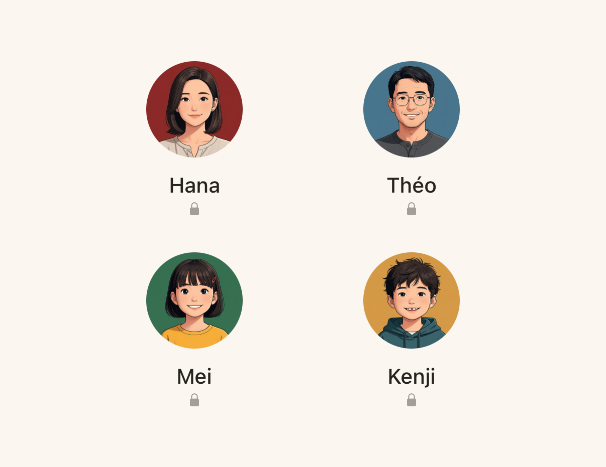

An assistant that becomes part of your team, not one that watches you.
The memory is your own Markdown — visible, scoped, and shaped by deliberate action. Here's what that buys a household.
He knows exactly what you hand him.
It runs both ways, and both are deliberate. Load notes, books, files and past conversations into a chat through the composer, and watch the token budget fill — nothing else is in the room. Then write back: anything worth keeping becomes a note in the wiki, ready for next time. You don't just feed a session — you grow a memory you can see.
Context for this chat
Group chats — and Maurice takes the notes.
Have a real conversation with your team — a household, a project, a few friends, all in one thread. Invite Maurice in when you want him: he takes part, answers what's asked, and writes the notes — so what you decide together becomes memory instead of lost scrollback.

Kyoto trip
Marc · Paola · Léo · MauriceOne iPad. Everyone's own Maurice.
Cloud chatbots assume one person per device, per login — but a household isn't built that way, and not every family wants to buy each child their own tablet. Maurice puts everyone on a single shared iPad or Mac: each member has their own conversations, notes and memories, and switching is just a tap and a PIN. The kids share a screen without sharing a brain.
